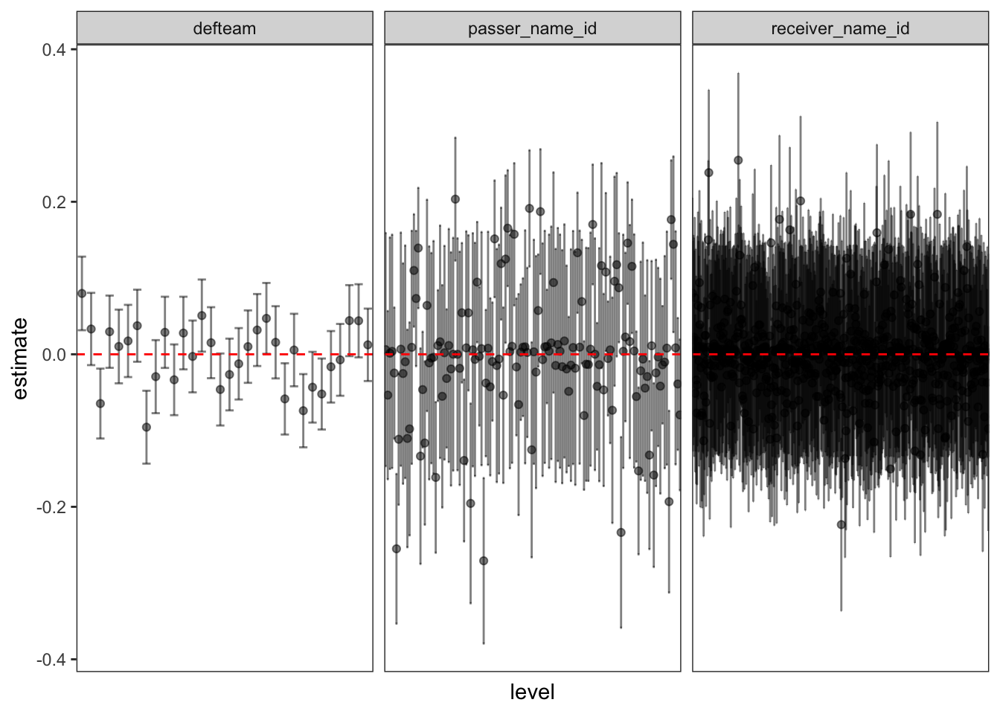
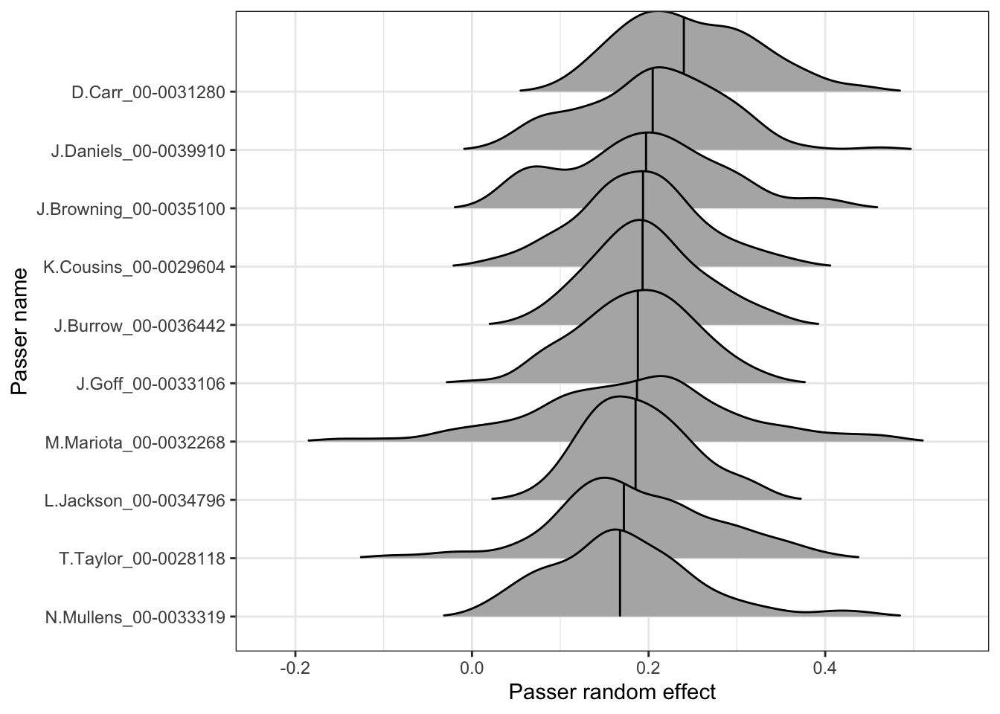
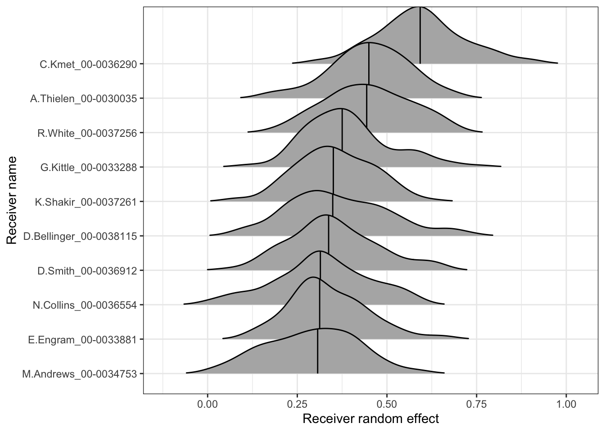

The purpose of this demo is to walk through how to access and generate different estimates of uncertainty about the random effects from multilevel models. This will be our last demo with the NFL passing data, as we’ll consider the random effects in the context of modeling completion probability. As a reminder, you can find the dataset and code to create the data (init_nfl_passing_data.R) on Canvas in the demos/week3 folder.
The following code chunk reads in the relevant dataset (assuming it is in the correct directory) of passing plays:
# A tibble: 35,987 × 17
game_id play_id drive posteam defteam posteam_type passer_name_id
<chr> <dbl> <dbl> <chr> <chr> <chr> <chr>
1 2023_01_ARI_WAS 77 1 WAS ARI home S.Howell_00-00370…
2 2023_01_ARI_WAS 124 1 WAS ARI home S.Howell_00-00370…
3 2023_01_ARI_WAS 147 1 WAS ARI home S.Howell_00-00370…
4 2023_01_ARI_WAS 172 1 WAS ARI home S.Howell_00-00370…
5 2023_01_ARI_WAS 197 1 WAS ARI home S.Howell_00-00370…
6 2023_01_ARI_WAS 220 1 WAS ARI home S.Howell_00-00370…
7 2023_01_ARI_WAS 332 2 ARI WAS away J.Dobbs_00-0033949
8 2023_01_ARI_WAS 357 2 ARI WAS away J.Dobbs_00-0033949
9 2023_01_ARI_WAS 380 2 ARI WAS away J.Dobbs_00-0033949
10 2023_01_ARI_WAS 526 3 WAS ARI home S.Howell_00-00370…
# ℹ 35,977 more rows
# ℹ 10 more variables: receiver_name_id <chr>, complete_pass <dbl>,
# pass_location <chr>, air_yards <dbl>, qb_hit <dbl>, epa <dbl>,
# yardline_100 <dbl>, down <dbl>, ydstogo <dbl>, is_home <dbl>
If you notice, there is an error in this dataset where there are receivers marked as NA_NA. We need to remove these receivers before continuing on:
Random effects for passers, receivers, and defenses
For this demo, we’ll consider the crossed effects model from earlier in the week which involved random intercepts for passers, receivers, and defenses:
library(lme4)
Warning: package 'lme4' was built under R version 4.2.3
Loading required package: Matrix
Warning: package 'Matrix' was built under R version 4.2.3
Attaching package: 'Matrix'
The following objects are masked from 'package:tidyr':
expand, pack, unpack
Warning in checkConv(attr(opt, "derivs"), opt$par, ctrl = control$checkConv, : Model is nearly unidentifiable: very large eigenvalue
- Rescale variables?
summary(full_pass_glmm)
Generalized linear mixed model fit by maximum likelihood (Laplace
Approximation) [glmerMod]
Family: binomial ( logit )
Formula:
complete_pass ~ air_yards + (1 | passer_name_id) + (1 | receiver_name_id) +
(1 | defteam)
Data: nfl_passing_data
AIC BIC logLik deviance df.resid
40076.5 40118.7 -20033.2 40066.5 34491
Scaled residuals:
Min 1Q Median 3Q Max
-3.2047 -0.9825 0.5218 0.6349 3.9676
Random effects:
Groups Name Variance Std.Dev.
receiver_name_id (Intercept) 0.01917 0.13846
passer_name_id (Intercept) 0.02349 0.15325
defteam (Intercept) 0.00393 0.06269
Number of obs: 34496, groups:
receiver_name_id, 634; passer_name_id, 136; defteam, 32
Fixed effects:
Estimate Std. Error z value Pr(>|z|)
(Intercept) 1.250184 0.029507 42.37 <2e-16 ***
air_yards -0.065060 0.001288 -50.51 <2e-16 ***
---
Signif. codes: 0 '***' 0.001 '**' 0.01 '*' 0.05 '.' 0.1 ' ' 1
Correlation of Fixed Effects:
(Intr)
air_yards -0.360
optimizer (Nelder_Mead) convergence code: 0 (OK)
Model is nearly unidentifiable: very large eigenvalue
- Rescale variables?
We can access the full table of random effects using the broom.mixed package again. The following code chunk extracts the three groups of random effects, as designated by the group column:
library(broom.mixed)
Warning: package 'broom.mixed' was built under R version 4.2.3
group_raneff <-tidy(full_pass_glmm, effects ="ran_vals")# View the datasetgroup_raneff
The first type of uncertainty we’ll consider is based on the theoretical model from lecture, which are effectively conditional standard deviation estimates (under the assumptions that the fixed effects and random effect variances are correct). In the group_raneff table above, this corresponds to the std.error column. We can quickly use this dataset to make a panel of plots for each random effect, displaying the estimates +/- one standard error to quickly see how they vary across the groups:
group_raneff |>ggplot(aes(x = level, y = estimate)) +geom_point(alpha =0.5) +geom_errorbar(aes(ymin = estimate - std.error, ymax = estimate + std.error),alpha =0.5) +# Add line at 0 on top:geom_hline(yintercept =0, linetype ="dashed", color ="red") +facet_wrap(~group, ncol =3, scales ="free_x") +theme_bw() +# Remove the x axis labels and ticks for each group level theme(axis.text.x =element_blank(),axis.ticks.x =element_blank(),panel.grid =element_blank())

From this, you quickly observe the different levels of variation across the three groups: defteam, passer_name_id, and receiver_name_id, with receiver_name_id displaying the greatest variation. This is consistent with the variance estimate in the summary output of the model. If we wanted to rely on this model and its assumptions, we could use the standard errors to get a sense of which levels of the random effects are noticeably different from 0 (either above or below).
Bootstrapping random effects
We’re now going to proceed to quantify the uncertainty of the random effect estimates using bootstrapping (i.e., resampling). This procedure requires careful recognition of the sources of variability in player and team performances. We can NOT simply resample pass attempts to construct a new dataset. If we think about the course of a football season, the schedule is fixed. In other words, any resampling procedure we consider must preserve the schedule that each player and team plays in each resampled dataset - with the same number of games and opponents. If we naively resampled at the observation level without thinking about this structure, we would observe impossible datasets that do not reflect the target source of variability that we’re interested in.
Instead, we need to resample the plays that take place within a particular game/match-up between two teams. You can think of this as attempting to replay a game over again and observing different performances and outcomes. But given the nature of football plays, we should not just resample plays within games either! Instead, we want our simulated datasets to capture the wide range of context that different plays can take place in. The simplest way to capture this structure, as well as any dependency between plays, is by resampling collections of plays at the drive level. A single iteration of resampling the dataset involves: going through each game and resampling the drives for each team (to ensure that each team has the same number of drives as observed). There are other ways to resample, this is just one approach that tries to account for the game structure.
In order to implement this, we first need to set-up a dataset of the games and drives for each team. One efficient way to do this, is to construct a nested dataset at the game-team-drive level. A nested dataset will contain “one row” for game-team-drive combination, but within that “row” will be all plays corresponding to that game-team-drive. The following code chunk uses the nest() function to collapse the nfl_passing_data into a dataset at this combination level. (NOTE: this may not account for all possible drives in case there are drives without pass attempts - however I’m just being lazy in the set-up of this to only rely on the nfl_passing_data in this demo.) This will make the process of resampling plays much easier:
game_team_drives <- nfl_passing_data |># First group by the three variables of interest:group_by(game_id, posteam, drive) |># Now nest the datanest() |>ungroup()game_team_drives
# A tibble: 10,585 × 4
game_id drive posteam data
<chr> <dbl> <chr> <list>
1 2023_01_ARI_WAS 1 WAS <tibble [6 × 14]>
2 2023_01_ARI_WAS 2 ARI <tibble [3 × 14]>
3 2023_01_ARI_WAS 3 WAS <tibble [3 × 14]>
4 2023_01_ARI_WAS 4 ARI <tibble [4 × 14]>
5 2023_01_ARI_WAS 5 WAS <tibble [1 × 14]>
6 2023_01_ARI_WAS 6 ARI <tibble [2 × 14]>
7 2023_01_ARI_WAS 7 WAS <tibble [3 × 14]>
8 2023_01_ARI_WAS 9 WAS <tibble [2 × 14]>
9 2023_01_ARI_WAS 10 ARI <tibble [3 × 14]>
10 2023_01_ARI_WAS 11 WAS <tibble [3 × 14]>
# ℹ 10,575 more rows
Using this dataset, we are now ready to bootstrap team drives within games to generate distributions of the passer, receiver, and defense effects. The following code chunk performs this process with \(B = 100\) bootstrapped iterations. NOTE: this will take some time to run and I hid the repeated observed warning messages that pop-up when fitting this model!
# Number of bootstrap iterations:N_BOOT <-100bootstrap_random_effects <-map_dfr(1:N_BOOT,function(boot_i) {# First resample drives by teams within games boot_game_team_drives <- game_team_drives |>group_by(game_id, posteam) |># Sample with replacementsample_n(n(), replace =TRUE) |># ungroup and unnestungroup() |>unnest(cols = data)# Now fit the model boot_glmm <-glmer(complete_pass ~ air_yards + (1| passer_name_id) + (1| receiver_name_id) + (1| defteam), data = boot_game_team_drives, family = binomial)# Store the random effects: boot_raneff <-tidy(boot_glmm, effects ="ran_vals")# Add a column for the bootstrap iteration and return boot_raneff |>mutate(boot = boot_i) })
We now have a dataset with 100 estimates for each of the different random effects (potentially fewer than 100 for some passers and receivers that might have been dropped in certain iterations due to their drives not being selected). We can proceed to inspect the distribution of the random effects beyond just computing standard errors. The following code chunk first sets up a dataset with the medians of the bootstrapped values which we’ll then use to select the top passers and receivers, as well as provide the ordering for the factors in relevant graphics displaying the distributions:
bootstrap_summary <- bootstrap_random_effects |>group_by(group, level) |>summarize(med_intercept =median(estimate, na.rm =TRUE),n_sims =n(),.groups ="drop")# Defenses in order:def_table <- bootstrap_summary |>filter(group =="defteam") |>mutate(level =fct_reorder(level, med_intercept))# Table of the top 10 passerstop_passers <- bootstrap_summary |>filter(group =="passer_name_id") |>slice_max(order_by = med_intercept, n =10) |>mutate(level =fct_reorder(level, med_intercept))# Top 10 receiverstop_receivers <- bootstrap_summary |>filter(group =="receiver_name_id") |>slice_max(order_by = med_intercept, n =10) |>mutate(level =fct_reorder(level, med_intercept))
Next, we’ll create displays of the top passers, receivers, and all of the defenses using ridge plots (which can be constructed with ggridges - this is a great way to visualize distributions across many levels of a categorical variable). First, we create the plot for the top passers:
library(ggridges)
Warning: package 'ggridges' was built under R version 4.2.3
bootstrap_random_effects |>filter(group =="passer_name_id", level %in% top_passers$level) |># Reorder them by the median ordermutate(level =factor(level, levels =levels(top_passers$level))) |>ggplot(aes(x = estimate, y = level)) +# Display the ridges with the median linegeom_density_ridges(quantile_lines =TRUE,quantiles =0.5,rel_min_height =0.01) +labs(x ="Passer random effect", y ="Passer name") +theme_bw()
Picking joint bandwidth of 0.0261

And then for top receivers:
bootstrap_random_effects |>filter(group =="receiver_name_id", level %in% top_receivers$level) |># Reorder them by the median ordermutate(level =factor(level, levels =levels(top_receivers$level))) |>ggplot(aes(x = estimate, y = level)) +# Display the ridges with the median linegeom_density_ridges(quantile_lines =TRUE,quantiles =0.5,rel_min_height =0.01) +labs(x ="Receiver random effect", y ="Receiver name") +theme_bw()
Picking joint bandwidth of 0.041

And finally for the defenses:
bootstrap_random_effects |>filter(group =="defteam") |># Reorder them by the median ordermutate(level =factor(level, levels =levels(def_table$level))) |>ggplot(aes(x = estimate, y = level)) +# Display the ridges with the median linegeom_density_ridges(quantile_lines =TRUE,quantiles =0.5,rel_min_height =0.01) +labs(x ="Defense random effect", y ="Team") +theme_bw()